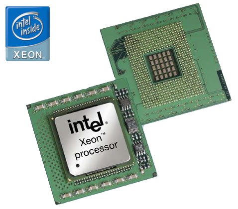

La Unidad Central de Procesamiento o procesador, es el componente principal del ordenador y otros dispositivos programables, que interpreta las instrucciones contenidas en los programas y procesa los datos. Las CPU proporcionan la característica fundamental del ordenador digital (la programabilidad) y son uno de los componentes necesarios encontrados en los ordenadores de cualquier tiempo, junto con la memoria principal y los dispositivos de entrada/salida. Se conoce como microprocesador el CPU que es manufacturado con circuitos integrados. Desde mediados de los años 1970, los microprocesadores de un solo chip han reemplazado casi totalmente todos los tipos de CPU y hoy en día, el término "CPU" es aplicado usualmente a todos los microprocesadores. La expresión "unidad central de proceso" es, en términos generales, un dispositivo lógico que pueden ejecutar complejos programas de ordenador. Esta amplia definición puede fácilmente ser aplicada a muchos de los primeros ordenadores que existieron mucho antes que el término "CPU" estuviera en amplio uso. Sin embargo, el término en sí mismo y su acrónimo han estado en uso en la industria de la Informática por lo menos desde el principio de los años 60.

Origenes
Antes de la aceptación comercial del transistor, los relés eléctricos y los tubos de vacío (válvulas termoiónicas) eran usados comúnmente como elementos de conmutación. Aunque éstos tenían distintas ventajas de velocidad sobre los anteriores diseños puramente mecánicos, no eran fiables por varias razones. Por ejemplo, hacer circuitos de lógica secuencial de corriente directa requería hardware adicional para hacer frente al problema del rebote de contacto. Por otro lado, mientras que los tubos de vacío no sufren del rebote de contacto, éstos deben calentarse antes de llegar a estar completamente operacionales y eventualmente fallan y dejan de funcionar por completo. Generalmente, cuando un tubo ha fallado, la CPU tendría que ser diagnosticada para localizar el componente que falla para que pueda ser reemplazado. Por lo tanto, los primeros computadores electrónicos, (basados en tubos de vacío), generalmente eran más rápidos pero menos confiables que los ordenadores electromecánicos, (basados en relés). Los ordenadores de tubo, como el EDVAC, tendieron en tener un promedio de ocho horas entre fallos, mientras que los ordenadores de relés, (anteriores y más lentas), como el Harvard Mark I, fallaban muy raramente. Al final, los CPU basados en tubo llegaron a ser dominantes porque las significativas ventajas de velocidad producidas generalmente pesaban más que los problemas de confiabilidad. La mayor parte de estas tempranas CPU síncronas corrían en frecuencias de reloj bajas comparadas con los modernos diseños microelectrónicos. Eran muy comunes en este tiempo las frecuencias de la señal del reloj con un rango desde 100 kHz hasta 4 MHz, limitado en gran parte por la velocidad de los dispositivos de conmutación con los que fueron construidos.
Microprocesadores
Desde la introducción del primer microprocesador, el Intel 4004, en 1971 y del primer microprocesador ampliamente usado, el Intel 8080, en 1974, esta clase de CPU ha desplazado casi totalmente el resto de los métodos de implementación de la Unidad Central de Proceso. Los fabricantes de mainframes y miniordenadores de ese tiempo lanzaron programas de desarrollo de IC propietarios para actualizar sus más viejas arquitecturas de ordenador y eventualmente produjeron microprocesadores con conjuntos de instrucciones que eran compatibles hacia atrás con sus más viejos hardwares y softwares.
Regresar a menu